从人形机器人到功守恒
一场费曼式深潜的知识沉淀
硬件 · 物理 · 投资与人生 · 尾部风险
33 张重制示意图 ｜ 6 个主题部分
导读
这份文档把一场跨越两个世界的对话沉淀了下来。前半程，我们从一份人形机器人的硬件报告出发，把 BOM、TOPS、执行器、谐波减速器这些术语，一路拆到最底层的物理——电磁、电机、扭矩、杠杆；后半程，我们发现这些物理里藏着一条更普适的铁律「功守恒」，于是顺着它，把话题迁移到了投资与人生：杠杆、alpha 与 beta、零和与正和、火鸡与尾部风险。
全篇用的是「费曼小白」的讲法：每个概念都先用大白话和比喻讲清「是什么、为什么」，再补上数据与术语；适合对比的地方用表格，关键示意图都重做成了清晰插图，嵌在它所解释的那段文字旁边。
你可以从头顺着「机器人 → 物理 → 投资」的逻辑链走一遍，也可以直接跳到关心的某个 Part。贯穿全篇的那句话是：
力，从来不会凭空产生；成本，也从来不会凭空消失——它只会换一个地方、换一个时间出现。
看懂这句话在机器人里怎么成立，就能看懂它在市场和人生里怎么成立。
目录
Part 1 读懂这份机器人报告：三个核心术语
1.1 BOM：一台机器人的「购物清单」
BOM 就是一张「装一台机器人，需要买哪些零件、各多少钱」的购物清单。
BOM（Bill of Materials，物料清单）指造一台机器所需全部零部件的明细，以及它们加起来的「纯料件成本」。它只算「料」，不含研发摊销、组装人工、品牌利润。
以特斯拉 Optimus 为例（以下为对话中引用的券商/行业口径）：V3 版本预计 2026 年 7–8 月投产；BOM 约 4–5 万美元（纯料件），对外商业报价约 7–8 万美元（含研发、组装、利润）；长期随规模化与国产替代，目标把单台成本压到约 2 万美元。整机约有 1 万个独特零件，具体数字仍待验证。
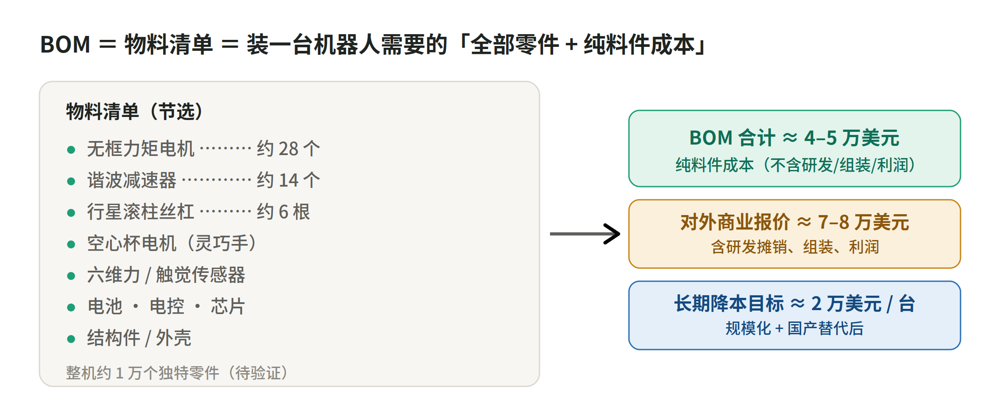
图 1 BOM＝纯料件清单，与对外报价、降本目标的区别
先看 BOM，是因为它决定了「成本地板」和「降本空间在哪」。后面的价值量拆解，本质就是把这张清单按价值占比重新归类。
1.2 TOPS：衡量 AI 算力
TOPS 就是给机器人的大脑算「一秒钟能想多少步」。
TOPS（Tera Operations Per Second，每秒万亿次运算）衡量 AI 芯片的推理算力，数字越大，模型在机器人身上「想得越快」。对话中提到两代芯片：A14.0 约 1000–1200 TOPS；A15.0 约 3000–5000 TOPS，算力跃升约三倍，用于支撑「世界模型」在机器人本体上实时运行（端侧化）。
两点辨析很重要：其一，TOPS 是整数（INT8）推理算力，和 TFLOPS（浮点算力）不是一回事，不能直接比；其二，厂商标的常是「峰值 TOPS」，不等于真实有效算力——还要看能效比 TOPS/W（每瓦电换来多少算力）。峰值高但能效差，落到机器人这种带电池的移动平台上就吃亏。
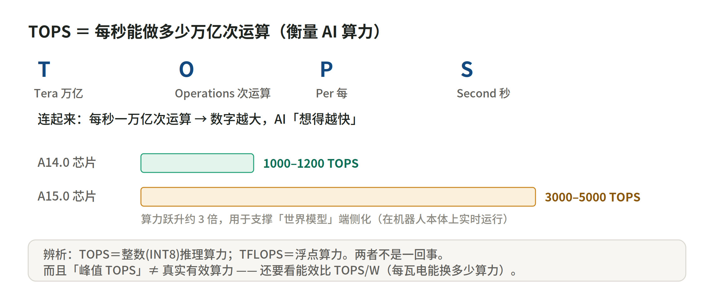
图 2 TOPS 的含义，以及与 TFLOPS、能效比的区别
1.3 整机价值量拆解：钱花在哪
把那张物料清单按「谁最贵」重新排队，你会发现钱几乎都花在让它动起来的关节上。
整机价值量拆解（对话引用的券商口径）：执行器约 55%、灵巧手约 17%、传感器约 8%、结构件/外壳约 8%、电池/电控/芯片约 7%、其他约 5%。
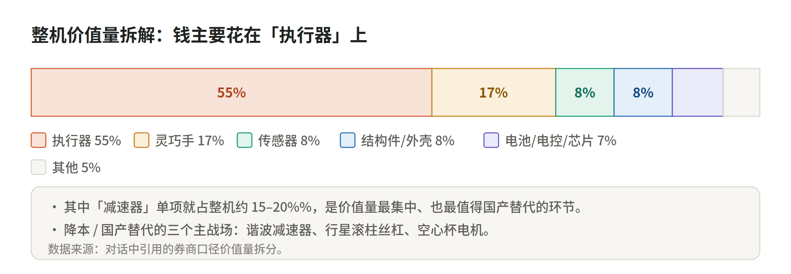
图 3 人形机器人整机价值量构成（执行器占大头）
| 部件 | 价值占比 | 说明 |
| 执行器 | 约 55% | 让关节转/伸的「肌肉」，价值最集中 |
| 灵巧手 | 约 17% | 手指，最精密也最难，路线未定型 |
| 传感器 | 约 8% | 力 / 触觉 / 位置，机器人的「神经」 |
| 结构件 / 外壳 | 约 8% | 骨架与外壳 |
| 电池 / 电控 / 芯片 | 约 7% | 供能与控制 |
| 其他 | 约 5% | 线缆、紧固件等 |
关键结论：其中「减速器」单项就占整机约 15–20%，是价值量最集中、也最适合国产替代的环节。降本与国产替代的三大主战场是——谐波减速器、行星滚柱丝杠、空心杯电机。这三样，正是 Part 3 要逐个拆开的核心零件。
Part 2 从最底层的物理讲起
2.1 电磁：用电造一块可控的磁铁
给一圈电线通上电，它就变成一块能随时开关的磁铁——这就是电磁。
电流通过线圈会产生磁场（电生磁）；线圈里塞一根铁芯，磁场被聚拢、更强，就成了「电磁铁」。它真正的杀手锏是「可控」：通电就有磁、断电就没磁；缠更多圈或加铁芯就更强；电流方向一反，N、S 两极立刻对调。
反过来也成立：让磁铁相对线圈运动，会在线圈里「生」出电——这就是发电机，本质是电机倒着用。电与磁，是一枚硬币的两面。
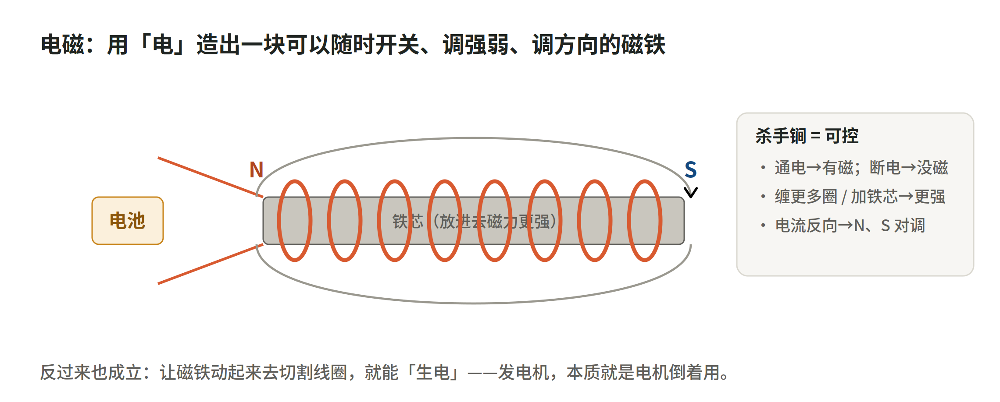
图 4 电磁铁：通电生磁、可开关、可调强弱与方向
2.2 电机：磁铁追磁铁
电机转起来，靠的是用一块「能开关的磁铁」，牵着另一块「会转的磁铁」一圈圈地追。
把永磁铁（会转的转子）放在中间，外圈布一圈电磁铁。给前方的电磁铁通电，它就吸引转子磁铁转过去；转子刚追到，立刻切换下一个电磁铁通电，磁铁就被「钓」着一圈圈转下去。所以电机的灵魂不是磁铁本身，而是「不停切换哪个通电」这个动作。
换向方式分两种：有刷电机用碳刷 + 换向器做机械换向（简单但磨损）；无刷电机用电子控制器换向（更耐用、更精密，机器人几乎都用无刷）。
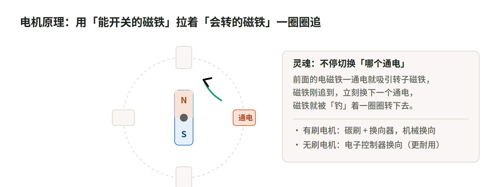
图 5 电机原理：切换通电，让转子磁铁一圈圈追
2.3 定子与转子
一个固定不动「借力」，一个转动「出力」——这就是定子和转子。
定子＝固定不动的那部分（通常是外圈线圈），它是「借力点」；转子＝转动的那部分（中间的磁铁），连着输出轴往外出力；两者之间留一道极窄的缝叫「气隙」。
打个比方：定子就像你坐转椅时蹬的那块地面——没有一个固定的东西给你借力，你自己是转不起来的。
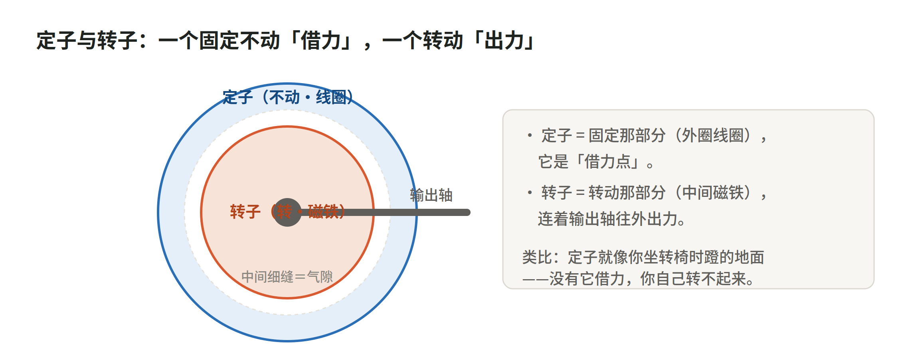
图 6 定子（固定借力）与转子（转动出力）
2.4 扭矩：旋转世界里的「力」
扭矩，就是旋转世界里的「力气」——不光看你使了多大劲，还看你使在离轴心多远的地方。
扭矩 τ ＝ 力 F × 力臂 L，单位牛·米（N·m）。同样的力，作用点离转轴越远（力臂越长），转动效果越强。这就是为什么扳手要做长、门把手装在离门轴最远的边上。
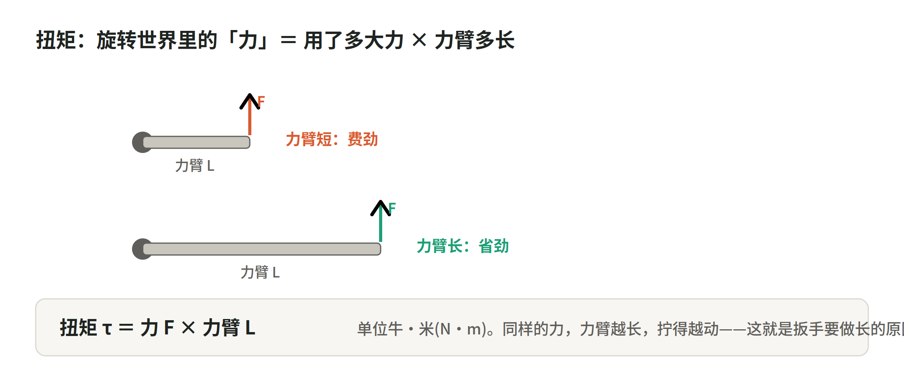
图 7 扭矩＝力 × 力臂，力臂越长越省劲
2.5 扭矩 vs 杠杆：一个量 vs 一台机械
扭矩是一个「数」，杠杆是一台「机器」——别把这两个词混成一回事。
扭矩是一个量，像速度、温度一样，描述「转动的趋势有多强」，它只是个数值。杠杆则是一台机械：一根棒、一个支点，两端各有一个力、形成两个扭矩，在支点处「较量」。
所谓「杠杆原理」，就是这两个扭矩相等时的平衡：F1 × L1 ＝ F2 × L2。一端力小、力臂长，就能撬动另一端力大、力臂短的负载。这条式子，Part 4 会发现它其实是功守恒的一个影子。
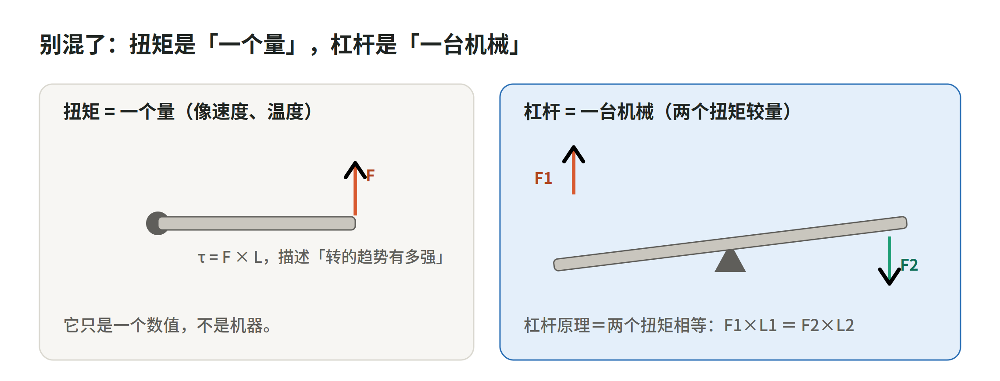
图 8 扭矩是一个量，杠杆是两扭矩较量的机械
Part 3 把零件组装起来：人形机器人的「肌肉」
3.1 总览：三套「肌肉系统」
人形机器人没有真正的肌肉，它用三套「电驱动的肌肉系统」来代替。
三套系统：旋转执行器（管关节的转，肩肘髋膝）、直线执行器（管伸缩，腿和躯干）、灵巧手（管手指的捏抓）。它们的共同套路都是「电机 + 传动 + 传感器」：电机出力，传动机构把力变成合适的形态（减速增扭，或旋转变直线），传感器负责反馈。
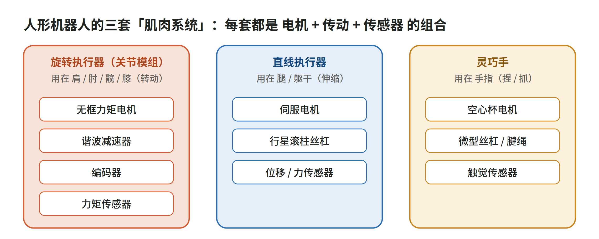
图 9 三套肌肉系统：每套都是 电机+传动+传感器
| 肌肉系统 | 用在哪 | 核心组成 |
| 旋转执行器 | 肩 / 肘 / 髋 / 膝 | 无框力矩电机 + 谐波减速器 + 编码器 + 力矩传感器 |
| 直线执行器 | 腿 / 躯干 | 伺服电机 + 行星滚柱丝杠 + 传感器 |
| 灵巧手 | 手指 | 空心杯电机 + 微型丝杠 / 腱绳 + 触觉传感器 |
3.2 两种「瘦身」电机：无框 vs 空心杯
为了又轻又有劲，工程师给电机做了两种不同方向的「减肥手术」。
无框力矩电机——去掉外壳，只留定子环和转子环，直接嵌进关节内部；特点是低速、大扭矩，用在需要大力气的大关节。空心杯电机——去掉转子里的铁芯，做成一个空心铜杯；特点是超轻、转动惯性极小、可以瞬间启停，用在追求灵活轻快的手指上。一句话记：一个「去外壳」（为扭矩），一个「去铁芯」（为轻快）。
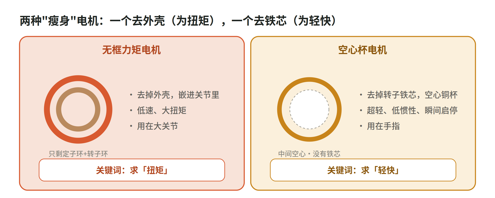
图 10 无框（去外壳求扭矩）与空心杯（去铁芯求轻快）
| 维度 | 无框力矩电机 | 空心杯电机 |
| 减掉了什么 | 外壳 | 转子铁芯 |
| 追求 | 大扭矩 | 轻、快、低惯性 |
| 典型部位 | 肩 / 肘 / 髋 / 膝大关节 | 灵巧手手指 |
| 特点 / 代价 | 需外部结构支撑 | 扭矩小，不适合重载 |
3.3 铁芯为什么 = 大扭矩
铁芯之所以能放大力气，是因为它把原本四散的磁力线「拢」成一束。
没有铁芯时，线圈产生的磁力线松散地散开，磁场弱、扭矩小；放进铁芯后，磁力线被铁芯引导、聚拢，磁场显著增强，扭矩随之变大。所以「要大扭矩就上铁芯」。这也解释了上一节的取舍：空心杯为了轻快牺牲了铁芯，自然就放弃了大扭矩——鱼与熊掌不可兼得。
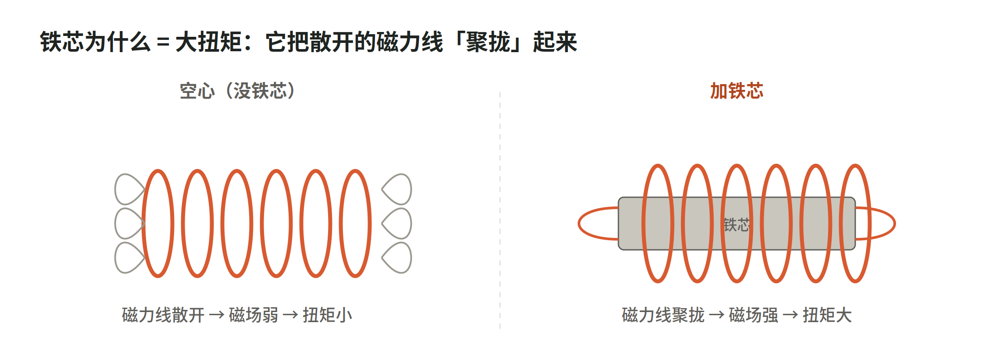
图 11 铁芯把散开的磁力线聚拢，磁场增强、扭矩变大
3.4 谐波减速器：关节的省力变速箱
谐波减速器，是关节里那台「把飞快的电机变成慢而有力」的精密变速箱——一级就能减速几十上百倍，还几乎没有旷量。
3.4.1 三件套与工作原理
它只有三个核心件：刚轮（固定不动的刚性外圈，内侧有齿，齿数比柔轮多 2）、柔轮（薄壁、柔性的杯状内圈，有外齿，会被压变形）、波发生器（一个椭圆形的凸轮，作为输入轴）。波发生器把柔轮撑成椭圆，椭圆的两个长轴端把柔轮的齿顶进刚轮的齿里，形成两个啮合区。单级减速比可达 50–100 倍，且几乎零间隙（回差极小），所以精度高。代表厂商：哈默纳科（日本，长期全球垄断）、绿的谐波（国产替代代表）。
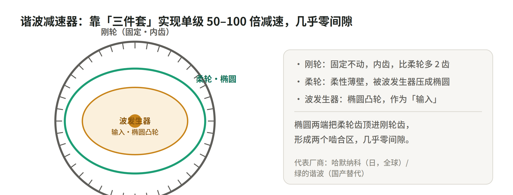
图 12 谐波减速器三件套：刚轮、柔轮、波发生器
3.4.2 为什么能大减速：数齿，差两个齿
刚轮比柔轮多 2 个齿。波发生器（输入）转一整圈，柔轮因为齿数比刚轮少 2，相对刚轮就「反向退回」2 个齿的位置。也就是说，输入转一大圈，输出只挪动 2 个齿那么一点点。
减速比 ＝ 柔轮齿数 ÷（刚轮齿数 − 柔轮齿数）。齿数差几乎永远是 2，所以约等于「柔轮齿数 ÷ 2」。例：柔轮 200 齿，减速比就是 100 倍——输入转 100 圈，输出才转 1 圈。
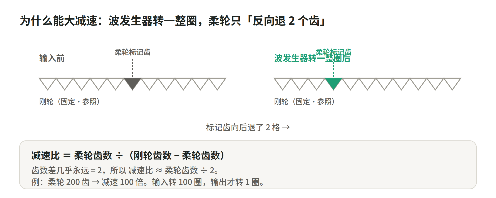
图 13 波发生器转一圈，柔轮反向退 2 齿 → 大减速
3.4.3 齿怎么咬住：错开半个齿距
两圈齿要啮合，必须错开半个齿距——齿尖对齿槽，才能严丝合缝地咬住、传递力。如果齿尖正对齿尖，就会互相顶死，谁也进不去，根本转不动。这是所有齿轮啮合的通则，谐波也不例外。
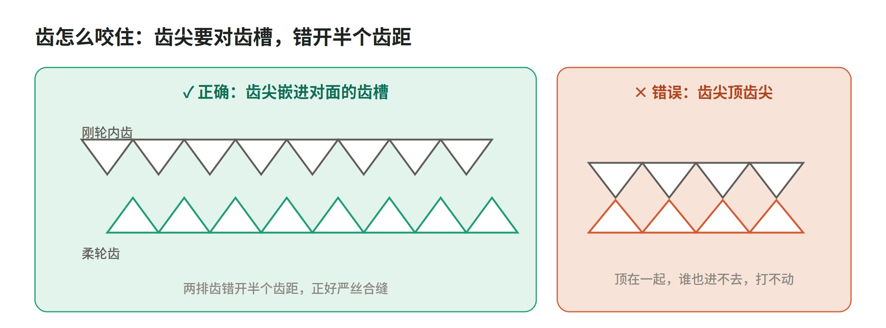
图 14 齿尖对齿槽（错开半个齿距）才能咬合
3.4.4 「谐波」二字的由来
波发生器转动时，柔轮上被顶出的「鼓包」不是固定的，而是随输入一圈圈地绕着传播。把这个椭圆变形摊平来看，恰好是一条正弦波（两个波峰＝椭圆两端两个鼓包）。这种沿着圆周行进的变形波，英文叫 strain wave（应变波），中文就译成了「谐波」。
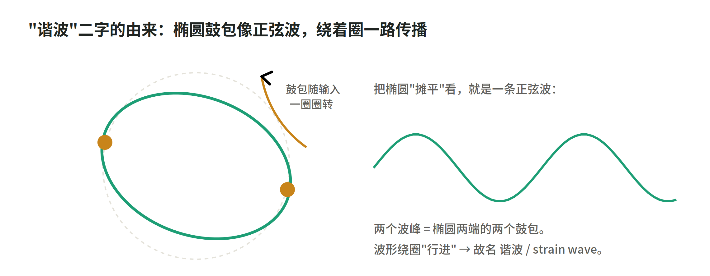
图 15 椭圆鼓包像正弦波绕圈传播，故名「谐波」
3.4.5 两个「2」别搞混
说「谐波有两个啮合点」时的 2，指的是椭圆的两个鼓包 ＝ 两个啮合区，而不是「只有两颗齿在咬」——每个啮合区里其实有好几颗齿同时受力，这正是它承载大、间隙小、精度高的原因。它也不是「齿数差 2」那个 2（那是讲减速比的，另一回事）。两个 2，含义完全不同。
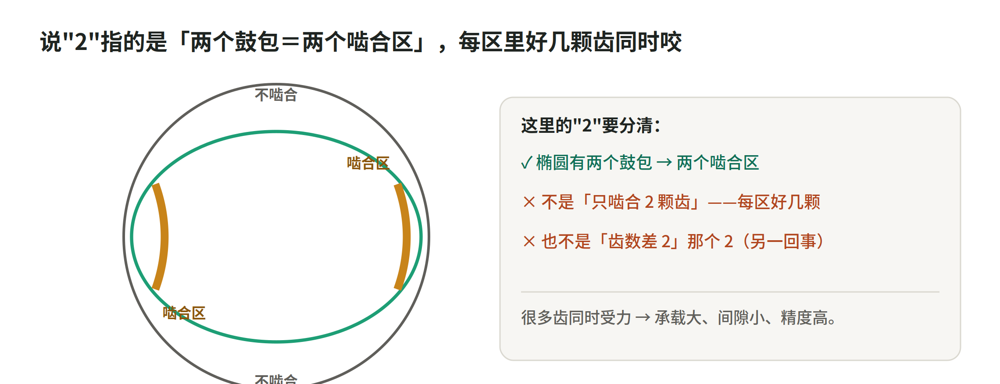
图 16 「2」＝两个啮合区，每区好几颗齿同时啮合
3.5 丝杠原理：斜坡缠在圆柱上
螺纹的本质，就是把一条斜坡「缠」在圆柱上——拧螺丝其实是在走盘山公路。
把一个直角三角形（斜坡）卷到圆柱表面，斜边就变成了螺纹。转一圈，相当于沿这条斜坡走完一圈，物体前进的距离正好是一个「螺距」。坡越缓（螺距越小），越省力，但要走的路（要转的圈数）越多——和盘山公路一个道理。所以丝杠是个「省力机构」。
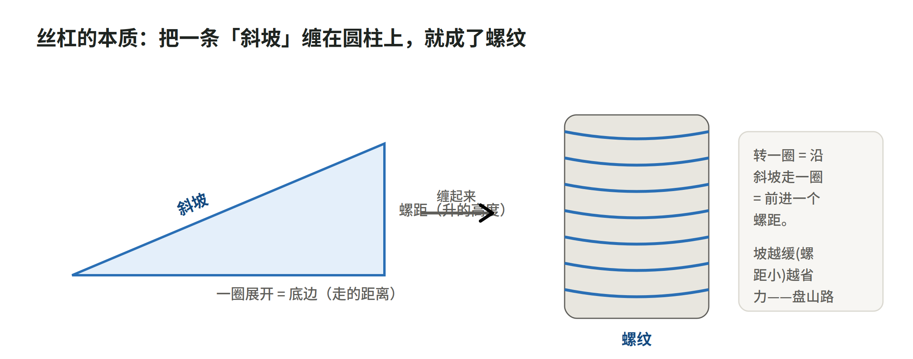
图 17 螺纹＝斜坡缠在圆柱上，转一圈进一个螺距
3.6 行星滚柱丝杠：把转动变直线
要把电机的「转」变成腿的「伸缩」，还要扛住全身重量，就用行星滚柱丝杠。
行星滚柱丝杠把旋转运动转成直线运动：中间一根带螺纹的丝杠，周围一圈带螺纹的滚柱（像行星绕太阳），外面是螺母。和常见的滚珠丝杠相比，滚珠是「点接触」（接触面小，重载下易磨损），滚柱是「线接触」（接触面是一条线，承载更大、更耐用）。机器人的腿和躯干要扛全身重量，所以选滚柱。它同样是国产替代的高价值环节。
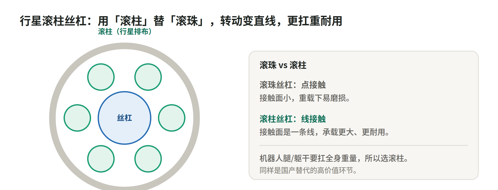
图 18 行星滚柱丝杠：滚柱线接触，承载大、耐用
| 维度 | 滚珠丝杠 | 行星滚柱丝杠 |
| 滚动体 | 滚珠 | 滚柱 |
| 接触方式 | 点接触 | 线接触 |
| 承载能力 | 较小 | 大 |
| 耐用性 | 一般 | 高 |
| 典型用途 | 一般传动 | 机器人腿 / 躯干等重载 |
3.7 六维力传感器：给机器人「触觉」
要让机器人有「触觉」，得让它同时感觉到六个方向的受力。
六维力传感器同时测量 3 个方向的力（Fx / Fy / Fz：前后、左右、上下的推拉）和 3 个方向的扭力（Mx / My / Mz：绕三个轴的旋转力），合起来 6 个量，故称「六维」。它通常装在手腕、脚踝，让机器人实时知道自己正被多大、什么方向的力作用——这是稳定行走、灵巧操作的基础。
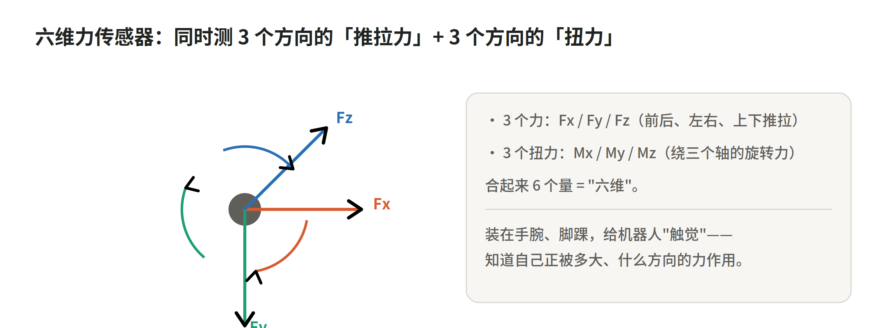
图 19 六维力传感器：3 个力 + 3 个扭力
3.8 旋转执行器：打包成关节模组
把电机、减速器、传感器全打包成一个能直接拧上去的标准件，就是关节模组。
旋转执行器（关节模组）＝ 无框力矩电机（出力）+ 谐波减速器（减速增扭）+ 编码器（测转了多少角度）+ 力矩传感器（测出了多大力）。这四样叠在一起、封装成一个标准化模块，相当于把「肩关节 + 三角肌 + 神经」合成了一个零件，装配时直接拧上即可。这种模组化，是人形机器人能规模化制造的关键。
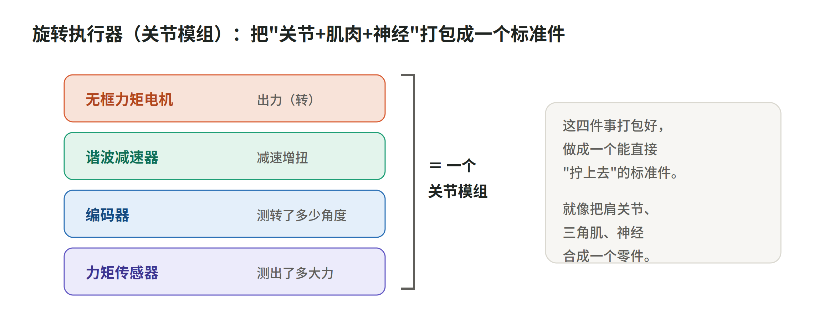
图 20 关节模组＝无框电机+谐波+编码器+力矩传感器
3.9 灵巧手：最像人、也最难啃
灵巧手占整机硬件价值约 17%，仅次于执行器。它在极小的空间里塞进空心杯电机、微型丝杠或腱绳传动、以及密集的触觉传感器，要同时做到轻、巧、有力、有触感，技术难度最高，至今行业路线尚未定型（腱绳、连杆、直驱等多种方案并存）。这也是为什么它的价值占比这么高——它几乎是整台机器里「人味」最浓的部分。
Part 4 一条贯穿的物理铁律：功守恒
4.1 千斤顶：拿距离换力
千斤顶能用一只手顶起一辆车，靠的不是凭空生力，而是拿「你多走的距离」去换「省下的力」。
一个核心铁律：功 ＝ 力 × 距离，这个「功」（能量）守恒。机器只能在力和距离之间做交换，省了力就必然费距离。螺旋千斤顶把两层省力机构叠在一起：长手柄（杠杆 / 扭矩，力臂很长）+ 细牙螺纹（斜坡，坡度很缓）。
算一笔账（对话中的数）：手柄转一圈，手要走约 1.9 米；而螺纹螺距 5 毫米，重物只升 0.5 厘米。距离上「1.9 米 ÷ 0.5 厘米 ≈ 377 倍」，于是力气上也省了约 377 倍。省下的力，全部由「多走的那段距离」补了回来——这就是功守恒。
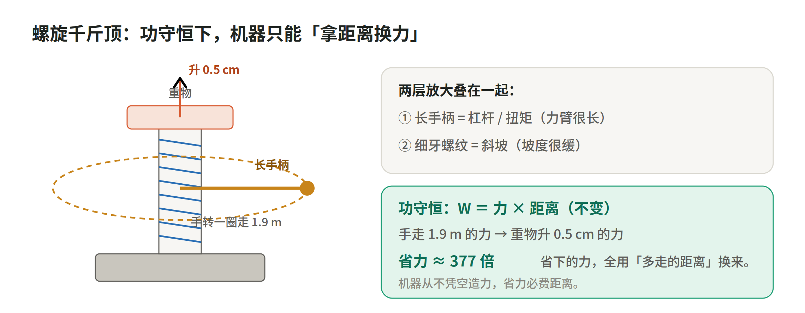
图 21 螺旋千斤顶：两层放大，省力 ≈ 377 倍，功守恒
4.2 功守恒 ↔︎ 扭矩＝力×力臂（W＝τ×θ）
前面讲的扭矩、杠杆、减速器，其实都是同一条守恒定律换了件衣服。
把功守恒搬到旋转世界：W ＝ 扭矩 τ × 角度 θ（对应直线世界的 力 × 距离）。力 ↔︎ 扭矩，距离 ↔︎ 角度，一一对应。由此能推出两件之前讲过的事：
推论①（杠杆）：同一根棒、转过同样的角度，θ 相同被约掉，于是 τ_in ＝ τ_out——这正是 F1L1 ＝ F2L2。静止时的扭矩平衡，其实是能量守恒的影子（物理上叫「虚功原理」）。
推论②（减速器）：当输入、输出转过的角度不同，就出现「减速即增扭」。谐波减速器输入转 50 圈、输出转 1 圈，角度差 50 倍，扭矩就放大约 50 倍——能量没变，只是把「转得多」换成了「劲更大」。
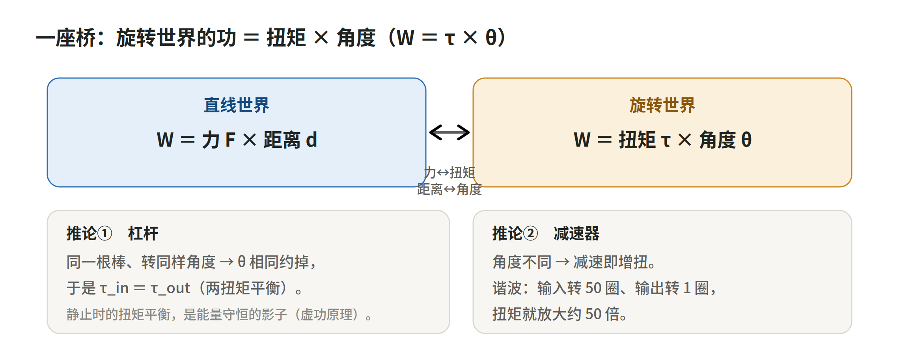
图 22 W＝τ×θ：杠杆与减速器都是功守恒的推论
4.3 阿基米德撬地球与杠杆三要素
阿基米德说给他一个支点能撬动地球，这话对，但功守恒会让你看清代价有多大。
用一个极小的力配上极长的力臂，原理上确实能撬动地球。但功守恒不打折：要把地球抬高 1 厘米，你那只手得在杠杆另一端划过约「十万光年」（银河系那么宽）的距离，花掉几千倍宇宙年龄的时间。省下的力，一分不少地变成了你要走的距离。
由此提炼出善用杠杆的三要素：① 一个「对的小力」——也就是你的 edge（真正的优势）；② 足够长的力臂——放大的倍数；③ 一个稳固的支点——撑不住，再大的杠杆也会塌。这三要素，正好是下一 Part 投资讨论的引子。
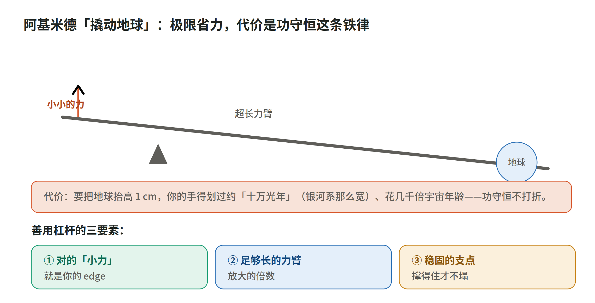
图 23 撬地球的代价与善用杠杆的三要素
Part 5 把物理迁移到投资与人生
5.1 成本不会消失，只会换地方：守恒区 vs 漏口
把功守恒搬到投资和人生：成本不会消失，只会换个地方、换个时间出现。
有些玩法处在「守恒区」，账当场结清：零和博弈（我赚的就是你亏的）、加杠杆（放大收益也放大成本）、一味求快（用脆弱换速度）、蛮力硬扛（成本立刻到账）。另一些玩法处在「漏口 / 破缺区」，账被搬走了：认知复利（让时间替你做功）、凸性下注（亏有限、赢无限）、正和创造（把饼做大）、叙事与注意力（用极低成本撬动人心）。
但要记住关键一点：漏口 ≠ 白嫖。成本并没有消失，它只是被「递延到以后、概率化到尾部、或搬到别人等不起的地方」。后面几节，正是这三种「搬法」的展开。
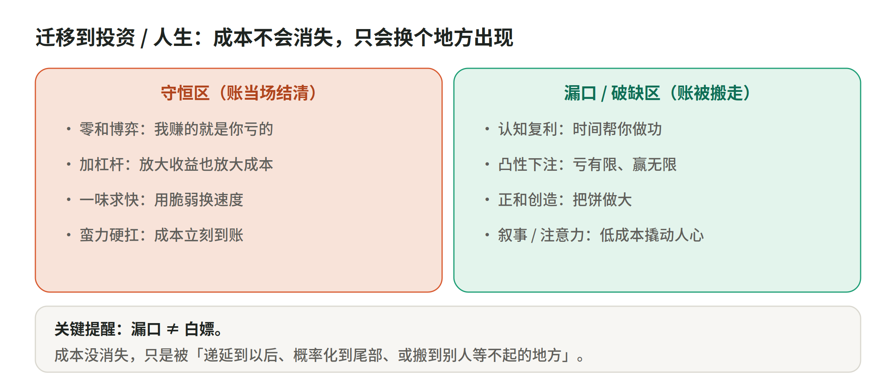
图 24 守恒区 vs 漏口区：成本被搬走，但没有消失
| 现实中的杠杆 | 偏守恒 / 漏口 | 成本搬到哪 |
| 资金杠杆（借钱） | 守恒 | 当场付利息 + 放大回撤 |
| 时间（复利） | 半漏口 | 递延，需要你等得起 |
| 人力（团队） | 半漏口 | 搬到协调 / 管理成本 |
| 代码 / 产品 | 漏口 | 一次开发，近零边际复制 |
| 叙事 / 注意力 | 漏口 | 极低成本撬动人心与共识 |
5.2 杠杆是 beta 乘数，不是 alpha 来源
杠杆只是一个放大旋钮，它放大你已有的东西，但不会无中生有变出本事。
先分清两种收益：β（beta）是「潮水抬船」，大盘涨大家都涨，谁都能拿；α（alpha）是你比市场多赚的那部分，是真本事。杠杆是个乘数：如果你有 α，加杠杆能把盈利放大；如果你没有 α，加杠杆只会放大 beta 的风险，再加上一笔实打实的借钱成本。所以「杠杆是 beta 乘数，不是 alpha 来源」。
那 α 从哪来？来自 edge——真实、可持续、且市场还没定价的优势。还有一个更高的目标，达利欧和马科维茨都指向它：找到多个互不相关的收益来源（投资界俗称「圣杯」）。因为「分散」是投资里唯一的「免费午餐」——不牺牲预期收益就能降低波动。
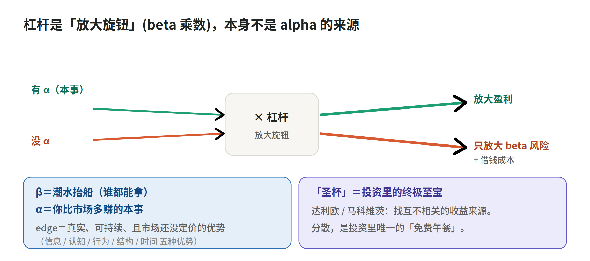
图 25 杠杆放大旋钮：有 α 放大盈利，无 α 只放大风险
| edge 的五种来源 | 含义举例 |
| 信息优势 | 比别人更早 / 更全地拿到事实 |
| 认知优势 | 同样信息，你解读得更对 |
| 行为优势 | 别人贪婪恐惧时，你能不动作 |
| 结构优势 | 你的资金期限 / 工具 / 位置更有利 |
| 时间优势 | 你等得起，能拿别人拿不住的仓 |
5.3 饼固定 vs 饼变大：零和与正和
钱有两种赚法：从别人盘子里搬过来，或者一起把盘子做大。
饼固定（零和）：总量不变，我多一块你就少一块，本质是搬运，必须有「接盘侠」才玩得下去——meme 币、纯博弈的炒作多属此类。饼变大（正和）：通过持有真正创造价值、不断成长的公司，大家的份额一起变大，是创造而非搬运。两种都能赚钱，但底层逻辑、可持续性和风险结构完全不同。
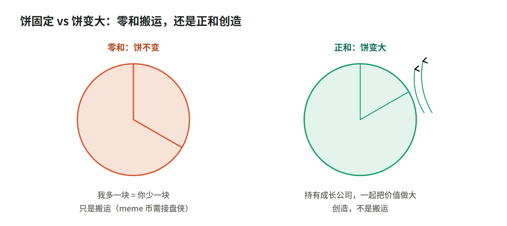
图 26 零和（搬运、需接盘）与正和（创造、饼变大）
5.4 成本被概率化：火鸡曲线
有一种「稳赚」，其实是把灾难的账，悄悄记在了概率的深处。
这是成本被「概率化」的典型。塔勒布的火鸡：被农场主喂养的 1000 天里，火鸡的安全感一天天上涨，它笃信「人类爱我，每天有饭吃」，像捡到了免费午餐；直到感恩节前一天，所有的账一次性结清。
现实里，卖期权、吃高息、加杠杆套息……那种「平时很稳、月月小赚」的策略，本质往往是在替尾部灾难「收保费」：平时收的小钱，迟早可能在某一天一次性吐回去，甚至倒贴。稳，不等于没有风险，可能只是风险还没到结账日。
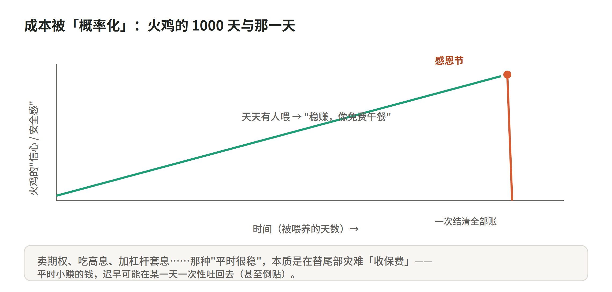
图 27 火鸡曲线：1000 天的「稳」，与感恩节那一天
5.5 你赚的是别人等不起那段距离的钱
你在市场里赚到的，很多时候是别人「等不起」那段时间的过路费。
一只好资产可能先深跌（比如亚马逊历史上曾跌去约 90%），再涨出千倍。等不起的人在谷底割肉离场，把筹码交出来；等得起的人扛过那段回撤与不确定，最后收获了全部涨幅。你赚的，正是那段「时间、回撤、锁定期、不确定性」的过路费。
而加杠杆会把你从「收过路费的人」变成「被迫付过路费的人」——一旦回撤触及强平线，你连等的资格都没有了。所以「心性 + 结构都等得起」，本身就是一种结构性 edge：它对应前面五种优势里的「时间优势」。
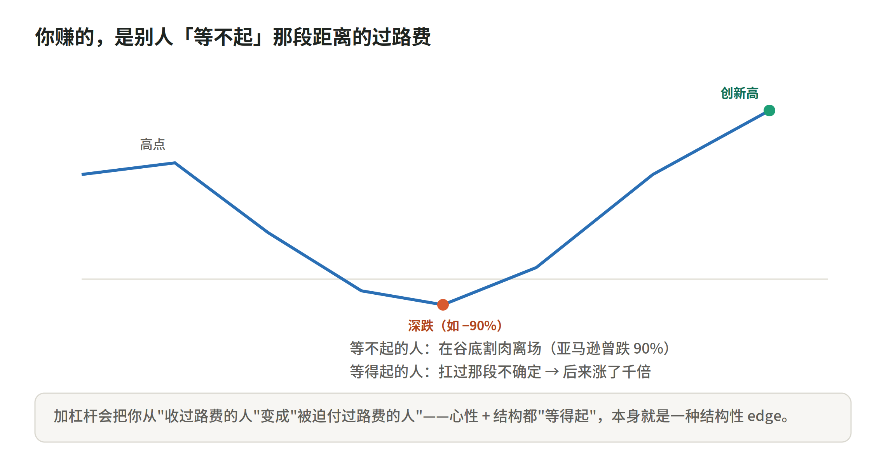
图 28 深跌再创新高：你赚的是别人「等不起」的过路费
5.6 看势能与临界点
与其猜哪天会爆发，不如先看清「弹簧被压得有多紧」。
势能 ＝ 一根被压紧的弹簧。它由两件事积累：预期与现实的偏离越大、市场仓位越极端，弹簧就被压得越紧；而「燃料」恰恰藏在还没动作的那一边（比如人人看空、仓位已空到极致，那向上的燃料就最足）。
临界点 ＝ 弹簧弹开的那一刻，信号是「价格对消息的反应变了」：利空出尽却不再跌，往往是底；利好用尽却不再涨，往往是顶（这就是威科夫的量价逻辑）。
关键心法：势能（type，方向 / 能量）看得见，临界（time，时点）几乎猜不准。所以要靠「赔率 + 仓位」来站位，而不是去预测火花在哪一秒迸出。同时要分清两种下跌：错杀（基本面没坏，弹簧还在）值得埋伏；真衰败（基本面真的烂了）就是价值陷阱，越跌越不能碰。
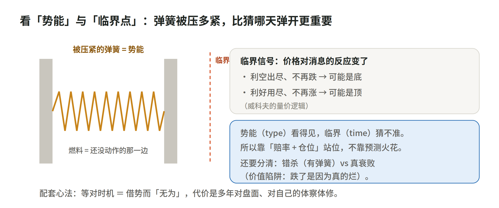
图 29 势能（看得见）与临界（猜不准）：靠赔率+仓位站位
5.7 三个账本：时间、概率、别人的耐心
世界记账，用的不是一个本子，而是三个：时间、概率、和别人的耐心。
把前面几节归拢，会发现「成本被搬走」无非搬进三个账本：① 时间账——账记在更长的时间里，现在看不见，以后才显影（复利与回撤都在这里）；② 概率账——账记在更深的概率里，灾难蹲在尾部，平时不露面（火鸡那一天在这里）；③ 耐心账——账记在别人的耐心里，你被急躁者补贴，或被你自己的急躁透支（等不起的距离在这里）。
两点延伸：耐心账本身是「半个守恒」——别人的急躁可以补贴你，但你自己的耐心存量也会被透支。福报也是半守恒：一半是「惜福」（存量有限，可被挥霍掉），一半是「积德」（能生出新的福报）——后者对应《了凡四训》讲的「改命」，即通过持续行善与改过，真正改变命运的概率分布。而「等对时机」这件事，本质是借势而「无为」，它的代价是多年对盘面、也对自己的体察与体修——这不是免费的，只是成本付在了平时。
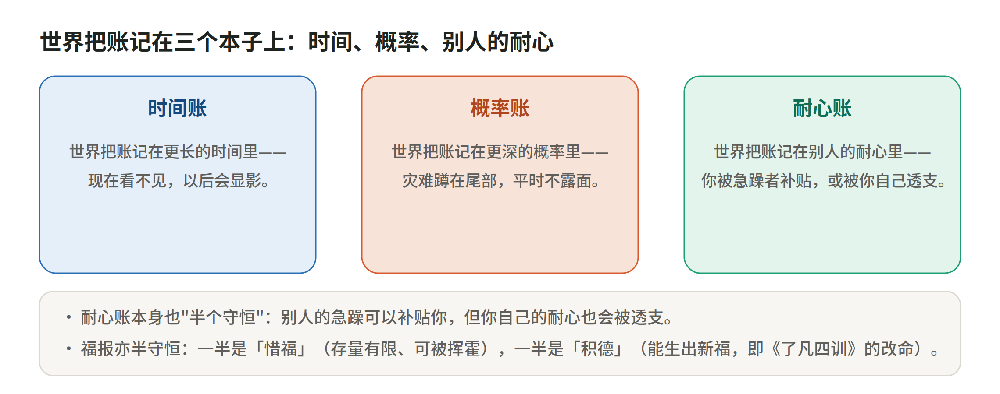
图 30 三个账本：时间、概率、别人的耐心（半守恒）
Part 6 尾部风险专题
6.1 尾部风险与肥尾
把所有可能的结果按概率画成一条钟形曲线，最该盯紧的，是它两头那对「尾巴」。
中间是常态（天天发生的小波动），两头是极端：左尾 ＝ 暴跌、崩盘、爆仓，是会要命的「尾部风险」；右尾 ＝ 暴利、好的黑天鹅，是凸性下注想吃到的「尾部效益」。
真实世界的分布是「肥尾」的：极端事件出现的频率，远比教科书假设的「薄尾」（正态分布）要高得多、也大得多。更要命的是损失的非线性——亏 50% 要涨 100% 才回本，亏 90% 要涨 900%，越往深尾越是毁灭性。而杠杆会把「尾部风险」直接升级成「毁灭」。所以真正的防御不是去预测黑天鹅，而是靠结构（杠铃策略、反脆弱）让自己在左尾砍不死、还能接住右尾。
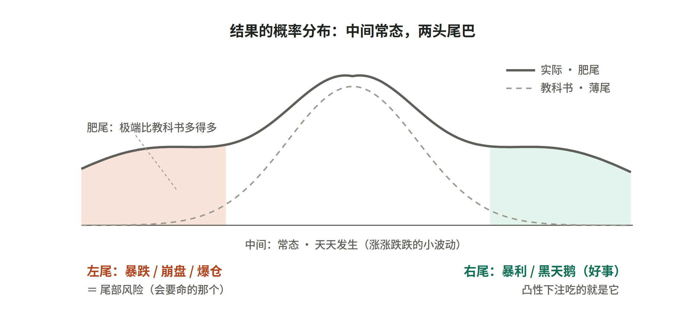
图 31 肥尾分布：左尾＝尾部风险，右尾＝尾部效益
6.2 波动 vs 分布：σ 不等于尾部风险
你心跳加速体感到的「波动」，和曲线宽窄量到的「波动率」，其实是两样东西。
把一段上蹿下跳的价格「路径」（有时间先后）按大小堆起来、抹掉时间，就得到那条钟形曲线（直方图）。于是：① 曲线的宽窄 ＝ 波动率 σ，这是看得出来的；② 但你体感的「顺序、节奏、连跌几天」属于路径信息，在分布里被时间抹掉了，看不出来——直方图不是电影；③ 更关键的，σ ≠ 尾部风险：一个东西可以平时 σ 很低（曲线很窄、很「稳」），却藏着巨大的尾部——暴风雨前的宁静、火鸡的第 1000 天，都是低 σ 高尾险。
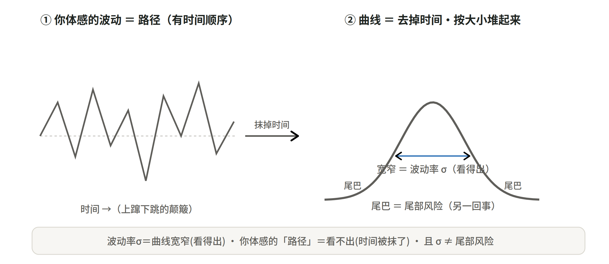
图 32 路径抹掉时间→分布：σ 是宽窄，不等于尾部风险
6.3 尾部 / 黑天鹅 / 灰天鹅 / 肥尾瘦尾
尾部、黑天鹅、灰天鹅、肥尾瘦尾——这几个词常被混用，最后理一遍。
尾部是个「位置」概念：分布两端的极端，左尾对应风险（坏极端），右尾对应效益（好极端）。黑天鹅是尾部里特殊的一类：你压根没料到、不在你模型里的那种极端；而罕见但你能预见的（比如经济衰退），叫灰天鹅。区别在「你的认知」，不在概率本身——所以黑天鹅 ⊂ 尾部事件，只是其中的子集；同一件事，对火鸡是黑天鹅，对屠夫只是常态。
肥尾 vs 瘦尾，则是描述尾巴「掉得多快」：瘦尾（教科书钟形）极端又少又小；肥尾（真实世界：市场、财富、流量）极端又多又大，因此黑天鹅在肥尾世界里频繁出没。这也直接关系到内容 / 注意力生意——它是典型的肥尾（极端斯坦），头部通吃，一条爆款的价值远大于一万条平庸，所以策略是「封死左尾、押注右尾」。
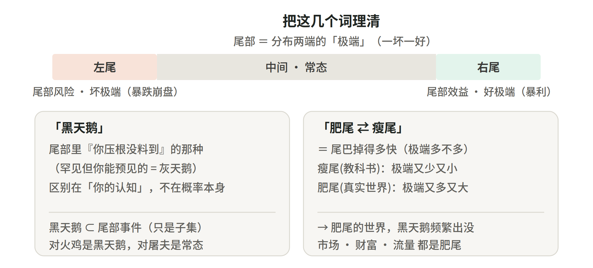
图 33 尾部 / 黑天鹅 / 灰天鹅 / 肥尾瘦尾 的关系
| 概念 | 一句话 | 关键区别 |
| 尾部 | 分布两端的极端 | 位置概念，分左 / 右 |
| 尾部风险 | 左尾 · 坏极端 | 暴跌崩盘，会要命 |
| 尾部效益 | 右尾 · 好极端 | 暴利，凸性吃的就是它 |
| 黑天鹅 | 没料到的尾部事件 | 看你的认知，是子集 |
| 灰天鹅 | 能预见的罕见事件 | 罕见但在模型内 |
| 肥尾 / 瘦尾 | 尾巴掉得快不快 | 肥尾极端又多又大 |
来源与说明
本文中的具体数据与论断，来源如下（部分为对话中即时引用，建议二次核实）：
Optimus 的 BOM、投产时间、TOPS、整机价值量拆解等数字：来自对话中引用的券商 / 行业研究口径，具体数值（尤其「约 1 万个独特零件」「A15.0 算力区间」）仍待官方与一手资料验证。
减速器 / 丝杠 / 电机的国产替代格局（哈默纳科、绿的谐波等）：行业公开认知。
「火鸡」寓言、肥尾、反脆弱、杠铃策略：纳西姆·塔勒布。
「圣杯＝不相关收益来源」「分散是唯一的免费午餐」：瑞·达利欧、哈里·马科维茨（现代组合理论）。
量价与底 / 顶的判断框架：威科夫（Wyckoff）方法。
「改过 / 改命」「惜福积德」：《了凡四训》。
物理部分（电磁、电机、扭矩、功守恒、虚功原理）：经典物理通识。
说明：本文为学习沉淀，所有比喻均为帮助理解而作；投资相关内容为认知探讨，不构成任何投资建议。